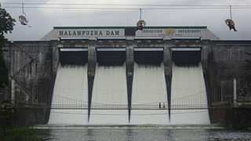

Malampuzha Dam

Completed in 1955, the Malampuzha Dam feeds the largest irrigation system in Kerala with a network of canals with a capacity of 115.06 m. This reservoir has the Western Ghats towering over it. Boating and fishing facilities are also available for the visitors
Readmore
Silent Valley National Park

The Silent Valley National Park, with its lush green forests and beautiful views of the rich flora and fauna, is a popular destination for nature as well as wildlife lovers all across the globe. Spread across an area of 89 square kilometres, the Silent Valley National Park is located in the Kundali Hills of the Western Ghats in Kerala in southern India. With its long, detailed history and the unique status of a rainforest, this national park is indeed a sight to visit. The well-planned Safari and the beautiful stop-overs around the park only make a trip to this part of Kerala more worthwhile.
A visit to this national park holds prominent significance for traveller and nature enthusiasts as this site is the last representative virgin tract of tropical evergreen forests in India. Though smaller in size when compared to the other national parks in India, what set the Silent Valley National Park apart from all other similar sites is the Sylvan environment that the region boasts of, along with its lofty and majestic peaks and the several rivers that run through its length.
The numerous plant and animal species that can be found here are indeed worth mentioning. The park has a strong faunal and floral population, with many of the endangered species residing here blissfully, unharmed by the outer environment. The ones who are most commonly seen here are the elephant, tiger, lion-tailed macaque, gaur, wild pig, panther and sambar. The vegetation of this park is the tropical, moist evergreen kind. It is also almost next to possible to ignore the presence of the River Kunthi, which descends from the Nilgiri Hills and then passes through this region, enchanting visitors with its crystal clear water, devoid of any impurities.
Readmore